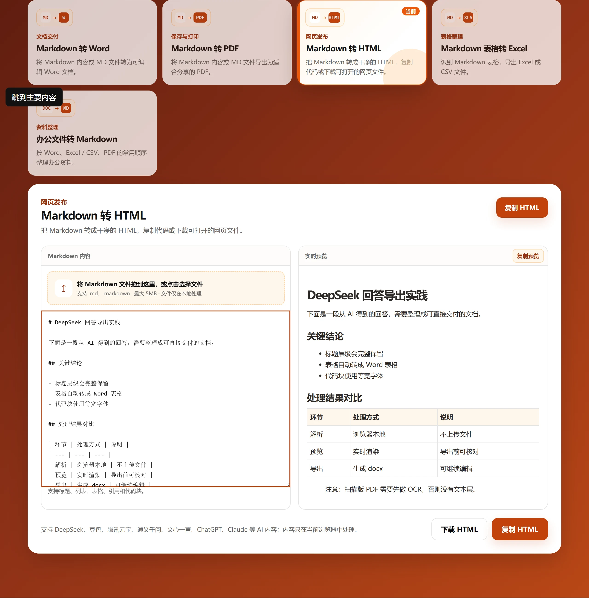

粘贴或上传内容
直接粘贴 Markdown，或载入 .md 文件，原有层级结构会完整保留。
免费在线工具
将 DeepSeek、ChatGPT 等 AI 生成的 Markdown 内容转换成干净的 HTML，复制代码或下载可直接打开的网页文件。转换全程在浏览器本地完成，内容不会上传。

工具说明
直接粘贴 Markdown，或载入 .md 文件，原有层级结构会完整保留。
左侧编辑，右侧即时渲染，导出前就能看到最终结构。
复制 HTML 片段粘进 CMS，或下载完整的 .html 文件本地打开。
常见问题
关于生成的 HTML 与发布前的检查。
包含标题、段落、列表、链接、表格、引用和代码块等常用结构，不附带任何 CSS。
可以。多数 CMS 接受 HTML 片段，粘贴后建议检查最终的样式表现。
可以。点击下载 HTML 会得到一个可直接在浏览器打开的 .html 文件。
不会。解析和转换都在当前浏览器中完成。
发布前请检查其中的链接和嵌入内容，尤其是来源不可信的 Markdown。
相关工具与教程
Markdown 转 Word → Markdown 转 PDF → Markdown 表格转 Excel → Markdown 转 HTML 教程 →
适用场景
语义化标题、列表和表格，是多数编辑器都接受的通用结构。
干净的标记文件比截图或 Word 文档更容易直接集成。
先拿到结构，再按目的地补内联样式，比从零手写更快。
限制
输出不含 CSS，直接打开会是一张朴素的页面，需要目标站点自己提供样式。
输出是静态标记，不含脚本和组件。
嵌入片段时可能需要自行去掉外层的 doctype 与 body 包裹。
其他工具